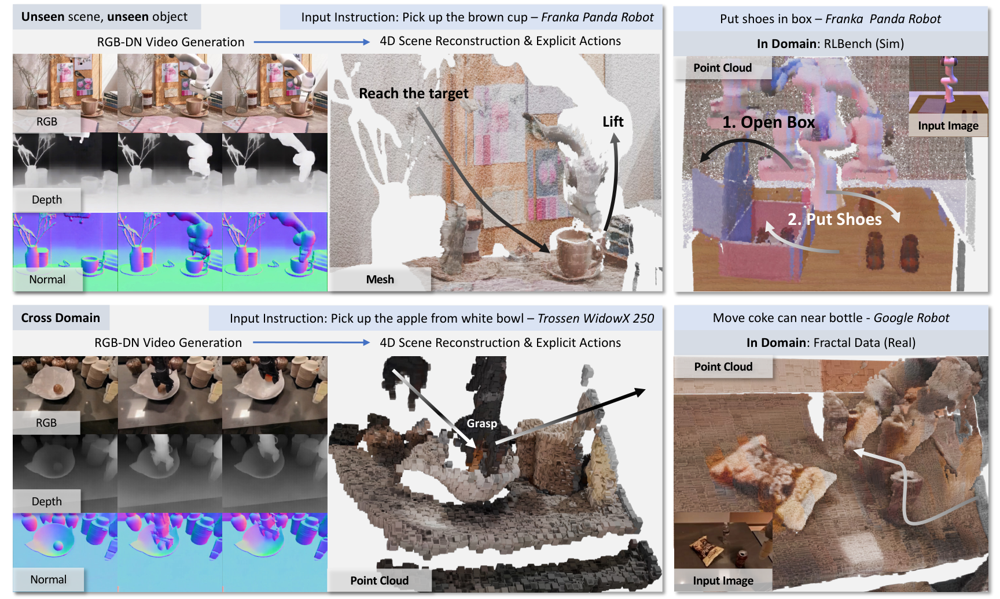
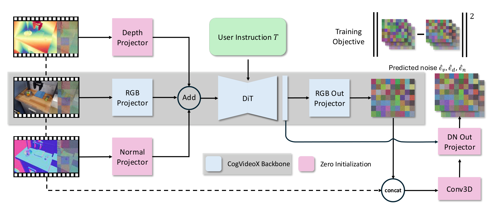
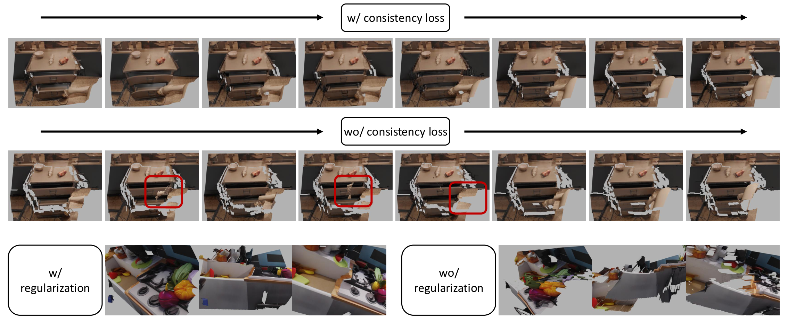
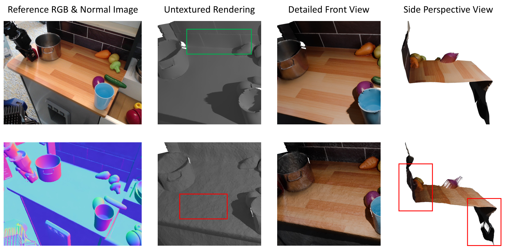
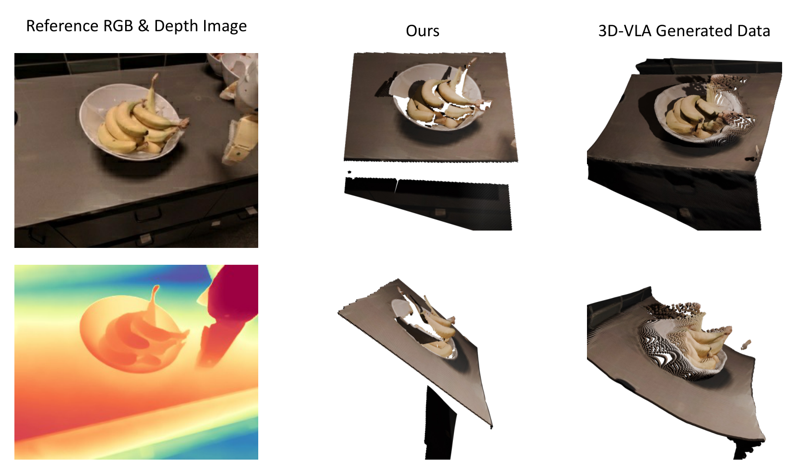
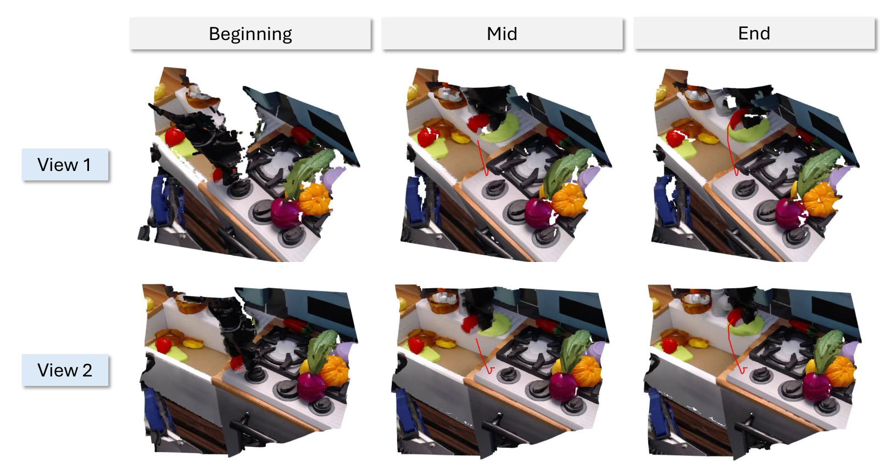

TesserAct: Learning 4D Embodied World Models
1. 论文速览
| 论文要解决什么 | 解决 embodied world model 只在 2D pixel space 中预测未来导致的空间关系不完整问题。对于抓取、开抽屉、使用工具等任务，机器人需要深度、表面方向和动态几何；只生成 RGB 视频容易出现物体尺度、形状、位姿和时间一致性错误。 |
|---|---|
| 作者的方法抓手 | 作者不直接预测昂贵的 4D point cloud 或 mesh，而是选择轻量中间表示 RGB-DN video。方法抓手包括：自动构建 RGB、Depth、Normal 标注数据集；修改并微调 CogVideoX 生成 RGB-DN；用 depth-normal integration、optical flow temporal consistency 和 regularization loss 把视频重建成 4D scene；最后用 4D point cloud 训练 inverse dynamics model 做动作规划。 |
| 最重要的结果 | 在 real/synthetic 4D scene generation 上，TesserAct 在 depth、normal 和 reconstructed point cloud Chamfer $L_1$ 上取得最优；在 RLBench action planning 9 个任务中，4DWM 在 7 个任务上超过 UniPi* 和 Image-BC，例如 close box 88、open drawer 80、open jar 44、sweep to dustpan 56、water plants 41。 |
| 阅读时要注意的点 | 这篇论文的关键不是“多预测两个通道”这么简单，而是 RGB-DN 作为 4D world 的低维接口是否足够：它要同时保留视频模型的可训练性、几何重建的可用性、以及下游 action planning 的收益。阅读时应重点追踪：数据标注是否可靠、depth/normal 与 RGB 的联合建模是否真的改善 4D 重建、几何信息何时帮助动作规划、何时 2D 信息已经足够。 |

一句话贡献
论文把机器人视频 world model 从 2D RGB 预测推进到 RGB-DN 条件生成，并提出从生成视频到时空一致 4D scene 的重建和下游控制 pipeline。
关键词
4D Embodied World Model RGB-DN Video CogVideoX Fine-tuning Depth-Normal Integration Inverse Dynamics
2. 研究问题与动机
2.1 为什么 2D world model 不够
Learned world models 的目标是模拟环境动态，用于 policy synthesis、data simulation 和 long-horizon planning。已有视觉 world model 多在 2D pixel space 中生成未来 RGB 视频，但物理世界本质上是三维的。只看 RGB 会让模型缺少深度、6-DoF pose、表面方向和几何约束，对需要精确位置和姿态的机器人操作不够。
作者在 Introduction 中举的核心问题是：2D 模型可能在时间上产生物体尺寸和形状不一致，导致数据驱动仿真和 robust policy learning 受到限制。也就是说，生成视频看起来合理不等于它能支撑机器人对物体几何的判断。
2.2 为什么不直接预测完整 4D 几何
直接生成 3D scene over time 非常昂贵，训练和推理都比 2D 视频复杂。TesserAct 的折中是预测 RGB-DN video：RGB 表示外观，Depth 表示几何距离，Normal 表示表面方向。这个表示比完整 4D scene 低维得多，又比 RGB 多了机器人需要的几何信息，而且可以复用现有视频扩散模型的能力。
2.3 数据瓶颈
训练 4D world model 需要大规模带深度和法向的视频数据，但真实机器人数据通常没有这些标注。作者的解决方案是把现有机器人视频数据扩展成 RGB-DN：仿真数据使用 simulator depth 和 depth2normal，真实数据用 RollingDepth 估计 depth、用 Temporal-Consistent Marigold-LCM-normal 估计 normal。这个自动标注 pipeline 是方法能成立的前提。
4. 方法详解
4.1 任务形式：条件 RGB-DN video diffusion
论文把 RGB \(\mathcal{V}\)、Depth \(\mathcal{D}\)、Normal \(\mathcal{N}\) 视频生成写成条件去噪任务：
其中 \(\mathbf{v}, \mathbf{d}, \mathbf{n}\) 是未来 RGB、depth、normal 的 latent 序列，条件 \(\mathbf{v}^0,\mathbf{d}^0,\mathbf{n}^0,\mathcal{T}\) 对应初始图像、初始 depth/normal 和文本动作指令。对任一模态 latent \(\mathbf{z}\in\{\mathbf{v},\mathbf{d},\mathbf{n}\}\)，forward diffusion 为：
把三种模态拼接为 \(\mathbf{x}=[\mathbf{v},\mathbf{n},\mathbf{d}]\)，denoising network \(\epsilon_\theta(\mathbf{x}_t,t,\mathbf{x}^0,\mathcal{T})\) 学习反向过程并最终解码到 pixel space。
4.2 RGB-DN 数据集构建
作者构建的 4D embodied video dataset 来自 synthetic 和 real 两类数据。仿真部分从 RLBench 选 20 个较难任务，每个任务生成 1000 个实例，每个实例 4 个视角，总计 80k synthetic 4D embodied videos。RLBench 提供 metric depth，但没有 normal，因此用 DSINE 的 depth2normal 从 depth 估计 normal；为了增强泛化，使用 Colosseum 风格的 scene randomization 改变背景、桌面纹理和光照。
真实数据来自 OpenX 中的 RT1 Fractal 和 Bridge，再加入 SomethingSomethingV2 提高动作/指令多样性。真实数据缺少 depth/normal，作者用 RollingDepth 标注 affine-invariant depth，用 Temporal-Consistent Marigold-LCM-normal 标注 normal。
| Dataset | Domain | Depth Source | Normal Source | Embodiment | # Videos |
|---|---|---|---|---|---|
| RLBench | Synthetic | Simulator | Depth2Normal | Franka Panda | 80k |
| RT1 Fractal Data | Real | RollingDepth | Marigold | Google Robot | 80k |
| Bridge | Real | RollingDepth | Marigold | WidowX | 25k |
| SomethingSomethingV2 | Real | RollingDepth | Marigold | Human Hand | 100k |

4.3 模型架构：从 CogVideoX 到 RGB-DN predictor
TesserAct 不从零训练扩散视频模型，而是修改并微调 CogVideoX。RGB、depth、normal 三种视频分别由 CogVideoX 的 3D VAE 编码，VAE 不额外 fine-tune。输入侧为三种模态引入独立 projector：
文本条件 \(\mathcal{T}\) 被定义为动作指令加机器人名称，例如 “pick up apple google robot”，这是为了区分不同 embodiment。输出侧保留原 RGB 输出方式 \(\epsilon^*_\mathbf{v}=\texttt{OutputProj}(h)\)，再为 depth/normal 增加模块：用 Conv3D 编码输入 latent 和 RGB denoised output 的拼接，再与 DiT hidden states 结合，经 DNProj 得到 depth/normal 的去噪预测。
为保留 CogVideoX 的 RGB 生成知识，作者用 CogVideoX 权重初始化主干，其他新增模块用 0 初始化，使训练初期 RGB 输出与 CogVideoX 一致。训练损失是三模态噪声预测的 MSE：

4.4 从 RGB-DN video 重建 4D scene
生成的 depth 是相对 depth，不能直接得到完整尺度一致的 3D scene；而仅逐帧 depth-normal integration 又缺少时间一致性。TesserAct 的重建算法先用 normal map 优化每帧 depth，再用 optical flow 建立跨帧约束。
在 perspective camera 下，pixel \(\boldsymbol{u}=(u,v)^T\)、depth \(d\)、normal \(\boldsymbol{n}=(n_x,n_y,n_z)\) 满足 log-depth \(\tilde{d}=\log(d)\) 的 normal integration 约束。作者采用迭代优化形式：
然后用 RAFT optical flow \(\mathcal{F}\) 识别 static 和 dynamic regions：\(\mathcal{M}_s^i=\|\mathcal{F}^i\|\le c\)，\(\mathcal{M}_d^i=\neg\mathcal{M}_s^i\)，背景区域为 \(\mathcal{M}_b^i=\mathcal{M}_s^i\cap\mathcal{M}_s^{i-1}\)。根据 flow 把前一帧 depth warp 到当前帧位置，定义 temporal consistency loss：
同时加入 regularization loss，让优化后的 depth 不偏离生成 depth 太远：
总目标为：

4.5 用 4D scene 做 embodied action planning
生成 4D scene 后，作者训练 inverse dynamics model，根据当前状态 \(s_i\)、预测未来状态 \(s_{i+1}\) 和指令 \(\mathcal{T}\) 输出 7-DoF action：
具体实现中，PointNet 编码 4D point cloud 的 3D 特征，再与 instruction text embedding 拼接，经 MLP 输出动作。这个下游实验的目标是验证：RGB-DN 重建出的几何信息不只是可视化更漂亮，而能实质帮助机器人动作决策。
5. 实验与结果
5.1 4D scene prediction 设置
4D scene prediction 在 real 和 synthetic 两个域评估。Real domain 使用 RT1 Fractal 和 Bridge 的 400 个 unseen samples，depth/normal 按数据构建流程估计；Synthetic domain 使用 RLBench 的 200 个 unseen samples，depth/normal 可直接从仿真器获得。每个 sample 生成 10 次并报告平均值。
指标分四类：RGB 质量用 FVD、SSIM、PSNR；depth 用 AbsRel、\(\delta_1\)、\(\delta_2\)；normal 用 Mean、Median、\(11.25^\circ\)；重建 point cloud 用 Chamfer \(L_1\)。Baselines 包括 OpenSora、CogVideoX 和作者实现的 4D Point-E。
5.2 4D scene generation 主结果
| Domain | Method | RGB FVD ↓ | RGB SSIM ↑ | RGB PSNR ↑ | Depth AbsRel ↓ | Normal Mean ↓ | Chamfer L1 ↓ |
|---|---|---|---|---|---|---|---|
| Real | 4D Point-E | - | - | - | - | - | 0.2211 |
| Real | OpenSora | 23.67 | 71.31 | 19.25 | 31.41 | 41.82 | 0.3013 |
| Real | CogVideoX | 20.64 | 79.38 | 22.39 | 26.17 | 19.53 | 0.2191 |
| Real | TesserAct | 21.59 | 75.86 | 20.27 | 22.07 | 15.74 | 0.2030 |
| Synthetic | 4D Point-E | - | - | - | - | - | 0.1086 |
| Synthetic | OpenSora | 54.11 | 65.90 | 19.28 | 18.40 | 12.94 | 0.2570 |
| Synthetic | CogVideoX | 41.23 | 76.60 | 20.87 | 19.81 | 20.36 | 0.2884 |
| Synthetic | TesserAct | 40.01 | 77.59 | 19.73 | 16.02 | 14.75 | 0.0811 |
读这张表要分清两个层次：TesserAct 不一定在 RGB 指标上全面压过 CogVideoX，尤其 real domain 的 RGB FVD/SSIM/PSNR 仍是 CogVideoX 最好；但 TesserAct 在 depth、normal 和最终 point cloud Chamfer 上最强。论文的主张正是：牺牲或保持相近 RGB 质量，换来更可靠的 4D 几何。

5.3 Novel view synthesis
作者进一步测试 monocular video to 4D 后的 novel view synthesis。在 RLBench 上，输入 front camera monocular video，比较 overhead 和 left shoulder camera 视角。Baseline 是 Shape of Motion，一个基于 Gaussian Splatting 的 video reconstruction 方法。
| Method | PSNR ↑ | SSIM ↑ | LPIPS ↓ | CLIP Score ↑ | CLIP Aesthetic ↑ | Time Costs ↓ |
|---|---|---|---|---|---|---|
| Shape of Motion | 10.94 | 24.02 | 73.82 | 66.67 | 3.61 | 约 2 hours |
| TesserAct | 12.99 | 42.62 | 60.51 | 83.02 | 3.73 | 约 1 min |
这个结果的要点是速度：TesserAct 的 4D 表示避免了慢速 per-scene optimization，在 PSNR、SSIM、CLIP Score 和 aesthetic 上也更好。不过 LPIPS 这一项表格中 Shape of Motion 更优，说明 TesserAct 的视觉感知距离并非所有指标占优。
5.4 Embodied action planning
Action planning 在 RLBench 的 9 个挑战任务上评估，每个任务报告 100 episodes 平均成功率。Baselines 是 Image-BC 和 UniPi*。UniPi* 由作者重实现，并用 fine-tuned CogVideoX 作为 backbone 以公平比较。
| Method | close box | open drawer | open jar | open microwave | put knife | sweep to dustpan | lid off | weighing off | water plants |
|---|---|---|---|---|---|---|---|---|---|
| Image-BC | 53 | 4 | 0 | 5 | 0 | 0 | 12 | 21 | 0 |
| UniPi* | 81 | 67 | 38 | 72 | 66 | 49 | 70 | 68 | 35 |
| 4DWM / TesserAct | 88 | 80 | 44 | 70 | 70 | 56 | 73 | 62 | 41 |
结果显示几何信息对多数任务有帮助，尤其是 close box、open jar、sweep to dustpan、water plants 等需要物体几何、工具使用或精确空间关系的任务。论文也诚实指出 open microwave 和 weighing off 中 TesserAct 不如 UniPi*，可能因为这些任务的 2D front image 已经提供了足够信息，额外 3D 处理不一定带来收益。
5.5 补充材料定性结果
补充材料增加了数据标注、out-of-domain 生成、各数据集 RGB-DN video generation 和显式 action trajectory 可视化。它们不改变主结论，但帮助判断方法的适用范围和失败风险。






6. 复现要点
6.1 视频扩散模型训练
[补充材料 Implementation Details] 模型基于 CogVideoX。Depth/normal projector 与 RGB projector 使用相同架构；输出侧 Conv3DNet 有 3 层，MLP 有 2 层，维度均为 1024。模型输出 49 frames，使用 gradient checkpointing、global batch size 16、bf16 precision。采样使用 DDPM scheduler 50 steps，classifier-free guidance scale 为 7.5。
训练 40,000 iterations，初始学习率 \(1\times10^{-4}\)，gradient clipping 1.0，warmup 1,000 steps。优化器为 Adam，\(\epsilon=1\times10^{-15}\)，EMA decay 0.99。
6.2 4D scene generation 超参数
[补充材料 4D Scene Generation] 重建损失参数按数据集不同调节：
| Dataset | \(\lambda_d\) | \(\lambda_b\) | \(\lambda_{g1}\) | \(\lambda_{g2}\) |
|---|---|---|---|---|
| RT-1, Bridge | 20 | 200 | 20 | 20 |
| RLBench | 20 | 200 | 2 | 2 |
作者明确说这些 \(\lambda\) 会随场景变化，实际最佳性能需要调参。这一点复现时很关键，因为 4D 重建质量不只取决于生成模型，也取决于后处理优化权重。
6.3 Robotics planning 训练
RLBench planning 中，模型主要差异是改为 13 frames 并 fine-tune，固定分辨率 512 × 512。每个任务采集 500 samples 训练 inverse dynamics model。推理时先预测并记录所有 future keyframes，之后只查询 inverse dynamics model，根据当前状态和预测未来状态输出动作。
[补充材料 Implementation Details for Robotics Planning] Action prediction 阶段先过滤背景和地面，只保留桌面与被操作物体相关点云，再采样 8192 points。PointNet 提取点云特征，与 instruction language embedding 拼接后输入 4-layer MLP，输出 7-DoF actions。为适配视频扩散模型输出，作者对 image 和 point cloud coordinates 加入相对幅度 20% 的 Gaussian noise。
6.4 复现风险清单
- 自动标注误差: 真实数据的 depth 和 normal 来自 off-the-shelf estimators，不是 ground truth；估计器偏差会传入 world model。
- 多模态对齐: RGB、Depth、Normal 必须时间一致，否则重建的 4D scene 会在动态区域出现错位。
- 重建超参数: \(\lambda\) 对不同数据集不同，论文也说明需要调参，复现实验要报告这些设置。
- 控制闭环细节: 未来 keyframes 的选择、inverse dynamics 的状态对应方式、点云过滤规则都会影响 RLBench 成功率。
- 算力依赖: 微调 CogVideoX、生成 49-frame RGB-DN 视频和多次采样评估都有较高显存和时间成本。
7. 分析、局限与边界
7.1 这篇论文最有价值的地方
最有价值的地方是提出了一个非常实用的 4D world model 表示：RGB-DN video。它不是最完整的 4D 表示，但很好地卡在了“可由现有视频模型训练”和“足以重建机器人需要的几何”之间。对于 embodied AI，这种中间表示比直接生成 RGB 视频更有几何约束，又比直接生成动态 point cloud 或 mesh 更容易规模化训练。
第二个价值点是论文把 world model 质量和下游动作规划连接起来了。4D scene generation 表格证明 depth/normal/Chamfer 更好，RLBench action planning 表格进一步显示几何提升能在多数任务中转化成成功率收益。这比只展示漂亮 4D 可视化更有说服力。
7.2 结果为什么站得住
结果站得住主要因为证据链较完整。第一，论文同时在 real 和 synthetic domain 上评估 4D scene，synthetic RLBench 有 ground-truth depth/normal，可以较客观地验证几何质量。第二，指标覆盖 RGB、depth、normal 和 point cloud，不只依赖单一视觉指标。第三，novel view synthesis 和 action planning 分别从重建应用和机器人控制应用验证 4D 表示的实用性。第四，补充材料给出了训练超参数、重建权重、点云过滤和动作模型细节，使方法不是完全黑箱。
不过需要谨慎的是：真实数据上的 depth/normal 标注来自估计器，因此 real-domain depth/normal 指标的“真值”也带有估计链条；RLBench action planning 是仿真环境，真实机器人闭环控制还没有形成同等强度的定量证据。
7.3 论文明确局限
作者在 Limitations 中明确指出：RGB-DN 表示便宜且易预测，但只捕获世界的单一表面。要构建更完整的 4D world model，未来可以让生成模型产生多个 RGB-DN views，再整合成更完整的 4D scene。
7.4 额外边界与可能改进
- 单视角遮挡问题: 单个 RGB-DN 序列很难恢复被遮挡物体背后的几何，多视角生成或主动视角选择会更强。
- 估计器依赖: RollingDepth 和 Marigold 的质量直接影响真实数据标注，如果换域后估计器失效，world model 训练也会被污染。
- 几何不总是必要: open microwave 和 weighing off 中 2D baseline 更强，说明不是所有任务都从 4D 中受益。
- 动态接触建模不足: RGB-DN 表示能重建表面和运动，但对接触力、摩擦、物体内部状态等物理变量仍没有显式建模。
- 工程复杂度: 方法需要视频生成、depth/normal 标注、光流、深度优化、点云过滤、inverse dynamics 多个模块，任何一环都可能成为部署瓶颈。
8. 组会问答准备
Q1: TesserAct 和普通视频 world model 的本质区别是什么？
普通视频 world model 主要预测 RGB 未来帧；TesserAct 同时预测 RGB、depth 和 normal，然后重建 4D point clouds。它把 world model 的输出从“看起来像未来”推进到“包含可用于几何推理的未来”。
Q2: 为什么选择 RGB-DN，而不是直接生成 point cloud？
直接生成动态 point cloud 训练和推理都更昂贵，帧数也受限。RGB-DN video 与现有视频扩散模型兼容，数据维度更低，同时保留重建 3D scene 所需的深度和表面方向。
Q3: 这篇论文中最核心的公式是哪一组？
一组是 RGB-DN conditional denoising objective，说明模型如何联合生成三模态视频；另一组是 4D scene reconstruction 的 \(\mathcal{L}_s+\mathcal{L}_c+\mathcal{L}_r\)，说明如何用 normal、optical flow 和生成 depth 得到时空一致深度。
Q4: 实验里最有说服力的结果是什么？
4D scene 表格中 Chamfer \(L_1\) 在 real 和 synthetic 上都最优，说明重建几何确实更好；RLBench action planning 中 7/9 任务超过 UniPi*，说明几何优势能转化为控制收益。
Q5: 最应该质疑的地方是什么？
真实数据的 depth/normal 不是 ground truth，而是估计器标注；此外，下游动作规划主要在 RLBench 仿真验证。若要证明它是通用机器人 world model，还需要更强真实机器人闭环实验和多视角/遮挡场景评估。